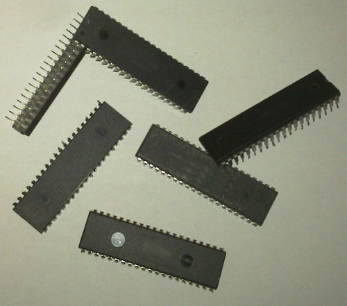

|
In its wide range of different products, a flagship model carefully designed
and manufactured by IGG is a clever processor. The unit implements a
huge flash-based program memory, a large SRAM-based stack, a great
32-bit ALU and rich I/O facilities, all integrated
on the same chip. Even though the product itself is one of the best on the market,
due to a somewhat unfortunate and ill-planned marketing campaign, sales have lagged.
There is still a large quantity left from the first production batch.
The sales department now suggests that demand could be raised by demonstrating the extraordinary capabilities of the device in specific application domains, such as text compression. |

The target platform (illustration - the actual product may differ in look while retaining size and pin compatibility) |
Your task is to show how well the architecture is suited for text compression by providing example programs that output a much larger amount of meaningful data than the original size of the program.
Write program that outputs exactly the input file of the task - the smaller the code is, the better. All instructions increases program size by 1 except that PUSH counts as 2.
Numbers are 32-bit signed numbers (-231 ≤ n < 231). Overflows cause error. It is an error if there are not enough elements on the stack for an instruction. The stack is empty at startup. Limits:
| instruction | description | stack before | stack after |
|---|---|---|---|
| PUSH const | Push a constant to the top of the stack. | ... | ...|const |
| OUT | Pop the top element of the stack and write it to the output as an ASCII character. It is an error if a > 127 or a < 0. | ...|a | ... |
| READ | Pop the top element of the stack, a, and push a copy of the a-th element of the stack on top. For a ≥ 0, the stack is indexed from the bottom. For a < 0, the stack is indexed from the top. (for example the element below a can be indexed with -1). | ...|a | ...|s[a] |
| JGZ | Jump if Greater than Zero: Pop the top two elements of the stack, a and b, and jump a instructions if b > 0. Jump forward if a > 0, jump backward if a < 0 (a = -1 jumps back to the current JGZ instruction). Execution stops if JGZ jumps out of the code in either direction. | ...|b|a | ... |
| ADD | Pop the top two elements of the stack, and push their sum. | ...|b|a | ...|a+b |
| MUL | Pop the top two elements of the stack, and push their product. | ...|b|a | ...|a*b |
| DIV | Pop the top two elements of the stack, and push their quotient and remainder (q=b/a, r=b%a like in C99). | ...|b|a | ...|q|r |
The real score of a size S program is
SCORE = 20 + 80*(A - S)/(A - B)where A, B parameters are given in the table below. SCORE is rounded to the nearest integer and then truncated to [0,100].
| input | 1.in | 2.in | 3.in | 4.in | 5.in | 6.in | 7.in | 8.in | 9.in | 10.in |
|---|---|---|---|---|---|---|---|---|---|---|
| A | 5500 | 5280 | 9080 | 17900 | 20000 | 25500 | 40000 | 41000 | 58000 | 65000 |
| B | 3500 | 3600 | 6000 | 10000 | 10000 | 15000 | 25000 | 27000 | 34000 | 32000 |
Hello World!
PUSH 72 OUT PUSH 101 OUT PUSH 108 PUSH -2 PUSH -1 MUL PUSH -2 READ OUT PUSH -1 ADD PUSH -1 READ PUSH -9 JGZ PUSH 6700 PUSH 21714 PUSH 22287 PUSH 6511 PUSH 200 DIV OUT PUSH -1 READ OUT PUSH -8 JGZ PUSH 15 DIV ADD OUT